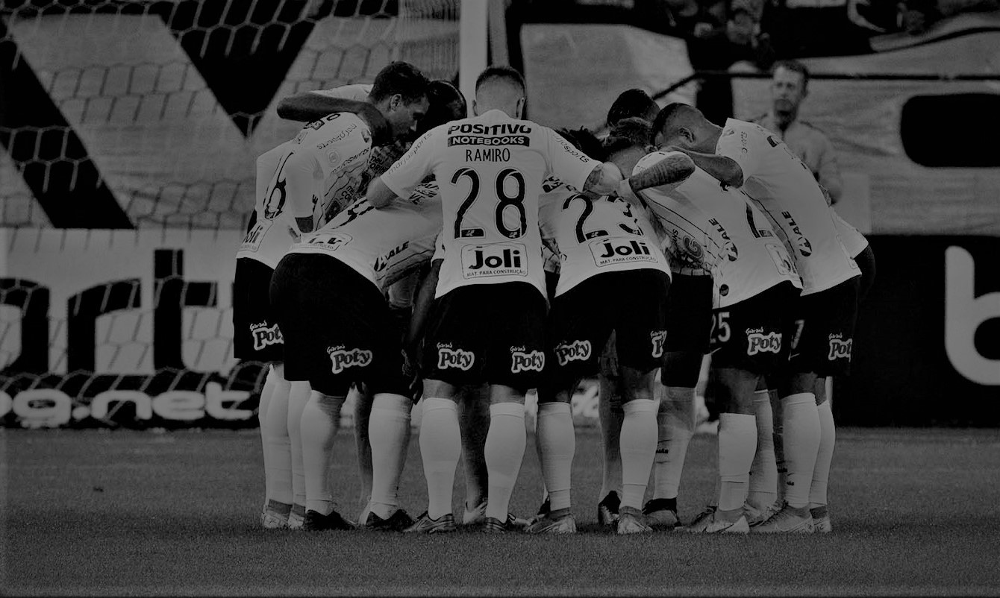
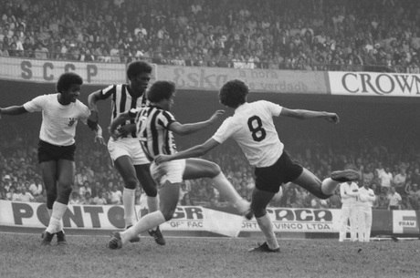

Sempre Altaineiro
És do Brasil
O clube mais brasileiro!

CORINTHIANS
GRANDE
GRANDE

O Sport Club Corinthians Paulista foi fundado em 1° de setembro de 1910. Seu nome foi definido só depois, em homenagem ao time inglés Corinthian FC, que estava excursionando pelo Brasil na época.
A equipe é a maior campeã da história do Campeonato Paulista, com 26 taças com o histórico de um titulo mundial, quatro Campeonatos Brasileiros e três Copas do Brasil. Uma das conquistas mais comemoradas pela torcida foi a do Estadual de 1977, com o famoso gol de Basilio, quebrando um tabu de 22 anos e oito meses sem títulos.
A Democracia Corinthiana foi um movimento ocorrido no início da década de 1980, que teve a luta pelo fim da ditadura militar no Brasil como uma das principais bandeiras.
Sócrates, Wladimir, Casagrande, Zenon e outros ex-atletas do Timão participaram da campanha pela volta do direito ao voto para presidente, o que não acontecia desde 1960.Neste período, o Corinthians conquistou os títulos do Paulistão de 1982 e 1983. No segundo ano, antes da final contra o São Paulo, no Morumbi, os jogadores entraram em campo com uma faixa com os dizeres: "Ganhar ou perder, mas sempre com democracia.


Em 1984, Sócrates prometeu deixar o Corinthians caso a Emenda Dante de Oliveira não passasse, visando eleições diretas no Brasil.
A emenda foi apoiada pela maioria, mas reprovada no Congresso. Sócrates se transferiu para a Fiorentina, enfraquecendo a Democracia Corinthiana devido a maus resultados,mudanças no elenco e a derrota de Adilson Monteiro Alves nas eleições de 1985, encerrando esse período no clube.
#VAI
CORINTHIANS
CORINTHIANS